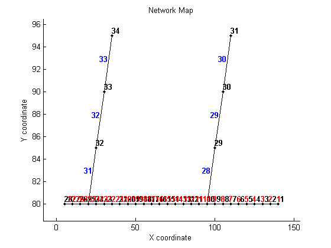
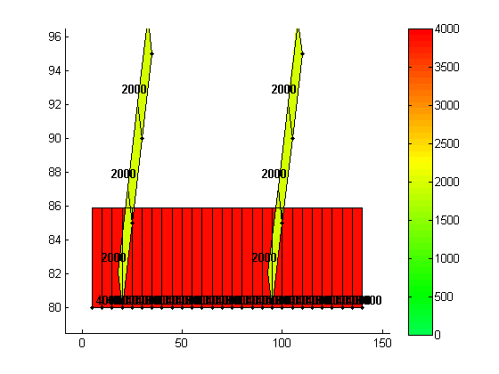
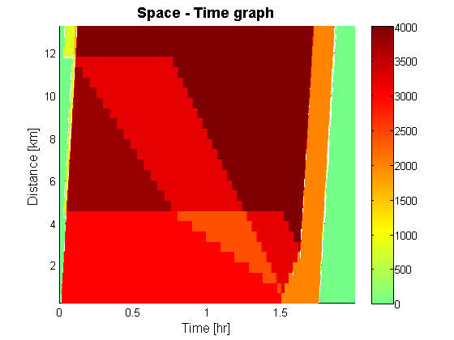
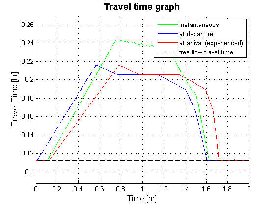
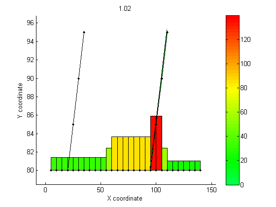

Tutorial 1: Visualizing network data
Contents
Disclaimer
This file is part of the matlab package for dynamic traffic assignments developed by the KULeuven.
Copyright (C) 2016 Himpe Willem, Leuven, Belgium
This program is free software: you can redistribute it and/or modify it under the terms of the GNU General Public License as published by the Free Software Foundation, either version 3 of the License, or any later version.
This program is distributed in the hope that it will be useful, but WITHOUT ANY WARRANTY; without even the implied warranty of MERCHANTABILITY or FITNESS FOR A PARTICULAR PURPOSE. See the GNU General Public License for more details.
You should have received a copy of the GNU General Public License along with this program. If not, see http://www.gnu.org/licenses/.
More information at: http://www.mech.kuleuven.be/en/cib/traffic/downloads or contact: willem.himpe {@} kuleuven.be
Introduction
This tutorial illustrates some of tools used to visualize data on a network. All of the results are preloaded and no traffic models are run in this tutorial. To run the full script simply hit run in the editor window or press F5. It is also possible to rerun a single section of the script or inspect data and functions (right mouse click or by pressing CTRL+D). For some sections additional information is printed to the command window during the run.
%add these folders to the search path addpath('Visualization Tools','Network Data') %clear the work space clear %clear the command window clc %close all windows close all display('<<<Visualizing network data>>>')
<<<Visualizing network data>>>
Loading the data
Links and nodes are in table format. In older versions of matlab this could potentially lead to problems (there are alternative network codings in the Network Data map for older versions)
%network and demand data load net1.mat %results (travel times, flows and densities) for a simulation with: %dt: time interval %totT: total number of intervals load result_net1.mat
Basic plotting functions
These functions are use to visualize the network graph and visualize loads on the links (arcs) or nodes (edges). To illustrate link loads the capacity of each link is plotted and to illustrate node loads the number of outgoing links of each node is plotted.
%plot the network plotNetwork(nodes,links,true,[]); %plot loads (capacities) on the links plotLoadedLinks(nodes,links,links.capacity,true,[],[],[]); %plot loads (number of outgoing links) on the nodes nbOut = hist(links.fromNode,size(nodes.id,1)); plotLoadedNodes(nodes,links,nbOut',true,[],[],[]); 

Plotting results
These functions are used to visualize typical results of traffic simulation. The flows along a specific path in the network are depicted in space-time (or XT) diagrams. Within day travel times along the same path are visualized for different integrations of the link travel times. The variation of densities is animated in the network by considering only every 10th simulation interval.
%Visualizing results using XT diagrams plotXT(links,1:27,flows,dt,totT-1); %Visualize the travel time along a route plotTT(links,1:27,tt,dt,totT); %Make an animation of the result fRate = 20; %set frame rate % fRate = inf; %allows the for manual control using space bar animateSimulation(nodes,links,densities(:,1:10:end),dt*[0:10:totT],fRate);
press space bar to continue  
Closing notes
- The title of the XT-graphs can be changed using the same notation as for regular figures.
- The animation plot can be manually controlled by setting the fRate to inf and pressing the space bar to progress.